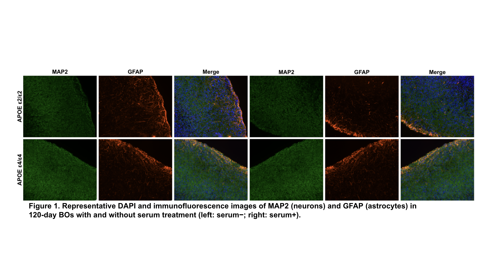
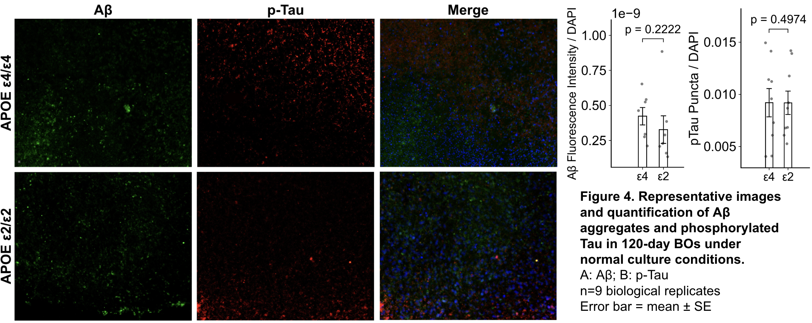
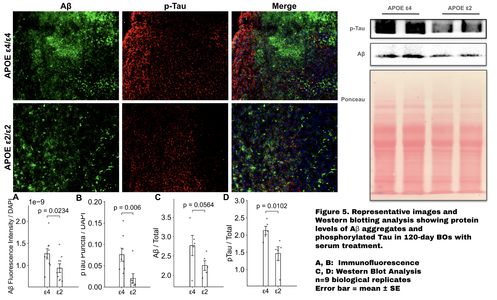

Quality Check
All organoid groups across APOE genotypes and serum conditions exhibit the expected key cellular components — neurons (MAP2+) and astrocytes (GFAP+) — with preserved cytoarchitecture. No significant structural differences were observed across APOE genotypes or between serum-treated and untreated conditions, confirming that the organoids are well-formed and suitable for downstream pathology assessment.

APOE Genotype Alone Is Insufficient to Induce AD Pathology
Under baseline (serum−) conditions, no significant differences in Aβ accumulation (p = 0.0523) or p-tau levels (p = 0.4974) were detected between APOE ε4/ε4 and ε2/ε2 organoids. These results indicate that APOE genotype alone, without an additional pathological trigger, is insufficient to drive detectable AD-related molecular pathology in this organoid model.

Serum Treatment Reveals APOE Genotype-Dependent AD Pathology
Following serum treatment — a model of blood-brain barrier disruption — APOE ε4/ε4 organoids exhibit significantly elevated Aβ aggregation (p = 0.0234) and p-tau levels (p = 0.006) compared to APOE ε2/ε2, corroborated by Western blot analysis (p-tau: p = 0.0102; Aβ: p = 0.0564). These findings demonstrate enhanced vulnerability of the ε4 genotype under pathological conditions and establish that serum-treated isogenic organoids can recapitulate APOE-dependent AD phenotypes, providing proof of concept for modeling sporadic AD mechanisms in vitro.
Overall — Serum-treated isogenic brain organoids recapitulate APOE genotype-dependent AD phenotypes, validating this platform as a proof-of-concept model for studying the molecular mechanisms of sporadic Alzheimer's disease.